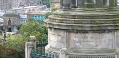
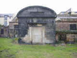
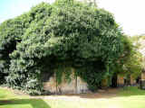

| Astoft |
| Dugald
Stewart - Philosopher
Click on photos to enlarge |
||||
|
 |
||||
|
Dugald Stewart (1753-1828) held
the chair of moral philosophy at Edinburgh University for 25 years from
1785, making it a centre of intellectual and moral influence. He gained a
reputation for inspiring eloquence and beauty of style and attracted
students from England, Europe and America. |
||||
  |
||||
|
His mausoleum (1828) in Canongate churchyard is very different and was, in fact, almost completely covered in a dense mass of ivy until very recently. Made of massive blocks of droved ashlar with a semi-elliptical top. The entrance has flat orderless pilasters with console capitals. |
||||
| Biography of Dugald Stewart | ||||
| More of Edinburgh at Astoft | ||||
| Home | Architecture Index | Email: astoft.freedom010@passmail.net | |
All photographic images in pages within the domain astoft.uk are copyright the website owner 2001 or later unless otherwise stated. Email contact above. Full size 3megapixel originals are available for approved purposes.